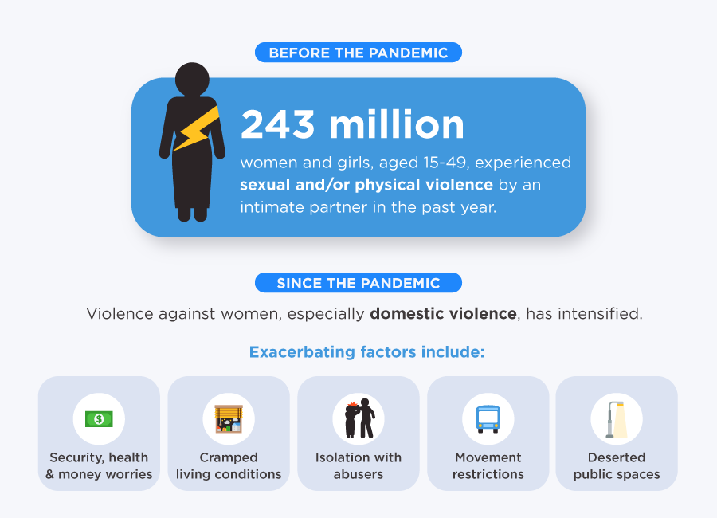

Safety of women matters a lot whether at home, outside the home or working place. Last few crimes against women especially rape cases were very dread and fearful. Because of such crimes, women safety in India has become a doubtful topic. According to the statistics of National Crime Records Bureau, highest rate of crime against women was recorded in the Chennai in 2000 (around 4,037 incidences). Chennai is the capital of southern state of Tamil Nadu however has been marked as city with high rate of crimes against women. However, it was seen some decrease in the crime rate against women in the subsequent years (around 838 by 2013). It has been recorded as the largest fall in the crime rate than other cities in India. It was just opposite in the capital of India, Delhi. Crime rate against women in Delhi was 17.6/100,000 females in 2000 (2,122 incidents) and 151.13/100,000 females in 2013 (11,449 incidents).
Some of the most common crimes against women are rape, dowry deaths, sexual harassment at home or work place, kidnapping and abduction, cruelty by husband, relatives, assault on a woman, and sex trafficking.
In the last few years, crime against women in Delhi has increased to a great extent. According to the statistics, it is found that every two out of three women have suffered around two to five times sexual harassment in the last year. According to the survey of women, it is found that women are losing their confidence in police. By the survey of Delhi government’s Women and Child Development Department, around 80% of the women in national capital have fear regarding their safety.
Women are harassed not only in the night or evening but also in the day time at their home, working places, or other places like street, club, etc. It is found through the survey that the reason of sexual harassment is the lack of gender-friendly environment and improper functional infrastructure such as consumption of alcohol and drugs in open area, lack of adequate lighting, safe public toilets, sidewalks, lack of effective police service, lack of properly working helpline numbers, etc.
A huge percentage of women have no faith that police can curb such harassment cases. There is an urgent need to understand and solve this problem of women safety so that they can also grow equally like men in their own country.
Initiative of police for prevention and speedy investigation of Caw
The Criminal Law (Amendment), Act 2013 was enacted for effective deterrence against sexual offences. Further, the Criminal Law (Amendment) Act, 2018 was enacted to prescribe even more stringent penal provisions including death penalty for rape of girls below the age of 12 years. The Act also inter-alia mandates completion of investigation and filing of charge sheet in rape cases in 2 months and trials to also be completed in 2 months.
Emergency Response Support System provides a pan-India, single internationally recognized number (112) based system for all emergencies, with computer aided dispatch of field resources to the location of distress.
The dreams of yesterday are the hopes of today and the reality of tomorrow.
The Ministry of Home Affairs (MHA) has launched a cyber-crime reporting portal on 20th September, 2018 for citizens to report obscene content.
Help Desk
Using technology to aid smart policing and safety management, Safe City Projects have been sanctioned in first Phase in 8 cities (Ahmedabad, Bengaluru, Chennai, Delhi, Hyderabad, Kolkata, Lucknow & Mumbai). The projects have been prepared by State Governments, taking into account the need for identification of hot spots for crimes against women for development of critical assets in various areas including infrastructure, technology adoption and capacity building in the community through awareness programmes.
MHA has launched the “National Database on Sexual Offenders” (NDSO) on 20thSeptember, 2018 to facilitate investigation and tracking of sexual offenders across the country.
In order to improve investigation, MHA has taken steps to strengthen DNA analysis units in Central and State Forensic Science Laboratories. This includes setting up of State-of-the-Art DNA Analysis Unit in Central Forensic Science Laboratory, Chandigarh. MHA has also sanctioned setting-up and upgrading of DNA Analysis units in State Forensic Science Laboratories in 20 States/UTs.